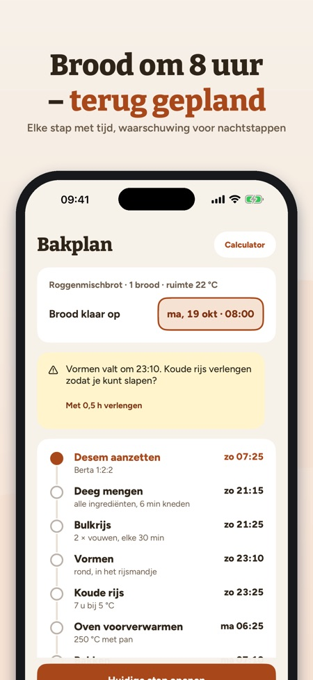
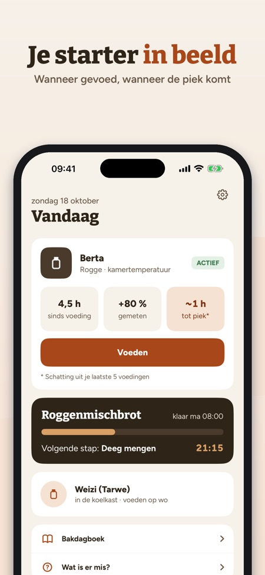
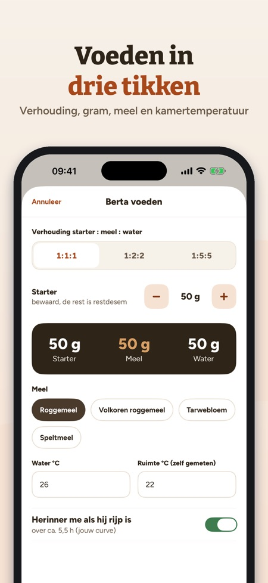

Starter voeden, bakplan maken. Brood klaar om 8 uur? Riseplan plant terug wanneer je moet aanzetten, mengen en vouwen – en waarschuwt als een stap midden in de nacht valt.



Je zuurdesem-maatje: voeden, plannen, bakken – alles in gram en °C.
STARTER
• Eén of meer starters (rogge, tarwe, spelt) met leeftijd en voedingen
• Voeden in drie tikken: verhouding 1:1:1, 1:2:2 of 1:5:5, gram, meel, water- en kamertemperatuur (zelf gemeten)
• Herinnering als je starter rijp is – volgens je eigen curve
• Koelkaststand met wekelijkse herinnering
RIJSCURVE
• Meet de hoogte na het voeden en zie je eigen curve
• Gemiddelde tijd tot de piek en maximaal volume uit je laatste voedingen
• Hoeveel sneller je starter is bij een warmere kamer – uit je eigen gegevens
BAKKERSPERCENTAGE-CALCULATOR
• Deeggewicht, hydratatie, desem en zout → meel, water, desem en zout in gram
• Het meel en water in de desem tellen mee
BAKPLAN TERUG
• Kies wanneer het brood klaar moet zijn – Riseplan rekent elke stap terug
• Rijstijden passen zich aan je kamertemperatuur aan (gemarkeerd als vuistregel)
• Waarschuwing als een handeling in je rusttijd valt, met voorstel voor een langere koude rijs
• Herinnering bij elke stap
ACTIEVE BAKSTAP
• Grote timer, teller voor rekken en vouwen, volgende stap in beeld
RECEPTEN
• Desembrood, Landbrot, Roggenmischbrot, Roggenbrot, Rågbröd/limpa, Grovbrød, Rugbrød, Ruisleipä, pizza en pannenkoeken van restdesem
• Meelnamen van je land (bijv. tarwebloem, roggemeel)
BAKDAGBOEK EN HULP
• Foto's, sterren en notities bij elk brood
• Wat te doen bij vloeistof bovenop, weinig rijs, plat brood of te zuur? Bij schimmel: weggooien.
AANKOOP
Zonder aankoop te gebruiken: één starter, voeden, herinneringen, calculator en drie recepten. Eén aankoop ontgrendelt alles: meerdere starters, rijscurve, bakplan, actieve bakstap, alle recepten en het bakdagboek. Geen abonnement, geen advertenties.
PRIVACY
Je gegevens blijven op je toestel. De app stuurt anonieme gebruiksstatistieken via Google Analytics for Firebase (bijv. welke schermen en knoppen worden gebruikt, aankopen in de app en het land bij benadering); maar alleen als je dat bij de start of in Instellingen aanzet (standaard uit).